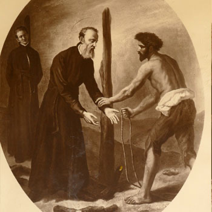

Isusovački blaženici
Brat
Bl. Šimun Yempo
1580. – 1623.
Nekadašnji budistički učenik postao je kršćanski vjeroučitelj. Nakon progonstva vratio se u Japan i potajno služio s misionarom Girolamom de Angelisom.
Tekst je preveden i prilagođen uz pomoć umjetne inteligencije.

Izvor slike
- Spomendan
- 4. prosinca
- Zaštitništvo
- Nije navedeno u izvoru
- Životni vijek
- 1580. – 1623.
- Djelovanje
- Obrazovanje i poučavanje vjere · Obraćenje i novi počeci · Progoni i progonstvo · Mučeništvo
- Razdoblje
- 16., 17. stoljeće
- Obraćenje na kršćanstvo
- 1596.
- Rođenje — dostupni podaci
- 1580.; dan i mjesec nisu potvrđeni u provjerenom izvoru.
- Mjesto rođenja
- Nozu, Kyūshū, Japan
- Datum smrti
- 04.12.1623.
- Mjesto smrti/mučeništva
- Edo (danas Tokio), Japan
- Okolnosti smrti/mučeništva
- Spaljen na lomači zajedno s drugim kršćanima za progona u Edu.
- Uloga
- Brat
- Mučenik
- Da
- Ostale oznake
- Član skupine Jeronima de Angelisa i Šimuna Yempoa
- Pripadnost
- Isusovac
- Drugi oblici imena
- Simon Yempo · Simon
Životopis
Šimun Yempo rođen je 1580. u Nozu na Kyushuu. Djetinjstvo je proveo u budističkom samostanu. Kada je njegov poglavar 1596. prihvatio kršćanstvo, obratio se i Šimun. Dvije godine poslije ušao je u isusovačko sjemenište. Poznavanje budističkoga nauka poslije mu je pomagalo u tumačenju kršćanske vjere sunarodnjacima.
Nakon zabrane misija najprije je otišao u progonstvo, a potom se vratio u Japan. Ponudio je pomoć Girolamu de Angelisu i s njime kao katehist potajno služio kršćanima. Tijekom toga rada primljen je u Družbu Isusovu. Mučeničku smrt podnio je 4. prosinca 1623.
Širi okvir njihova djelovanja bio je nastavak misije nakon protjerivanja stranih svećenika. U Campbellovoj povijesti Yempo, zapisan i kao Jempo, naveden je uz De Angelisa među pogubljenima 1623. Taj povijesni prikaz pokazuje i kako su se misionari oslanjali na skrovišta, putovanja i domaće suradnike. Yempova ranija budistička naobrazba omogućila mu je poznavanje vjerskoga svijeta njegovih sunarodnjaka. Nakon iskustva progonstva ponovno im se pridružio, ovaj put kao potajni suradnik isusovačkoga misionara.
Život i nasljeđe
Yempovo budističko školovanje bilo je praktično korisno u tumačenju kršćanstva sunarodnjacima. Njegov povratak iz izgnanstva i pomaganje De Angelisu pokazuju svjestan izbor nastavka rada unatoč opasnosti. Zajedno su se predali kada je zbog skrivanja uhićen njihov domaćin. Njihova je odgovornost tako uključivala i posljedice koje su drugi trpjeli zbog pomoći svećeniku. Kasnije su bili u odvojenim zatvorima, pa zajedničko mučeništvo ne znači da su cijelo zatočenje mogli provesti jedan uz drugoga.
Tekst je preveden i prilagođen uz pomoć umjetne inteligencije.
Pročitaj više na izvornoj stranici ↗